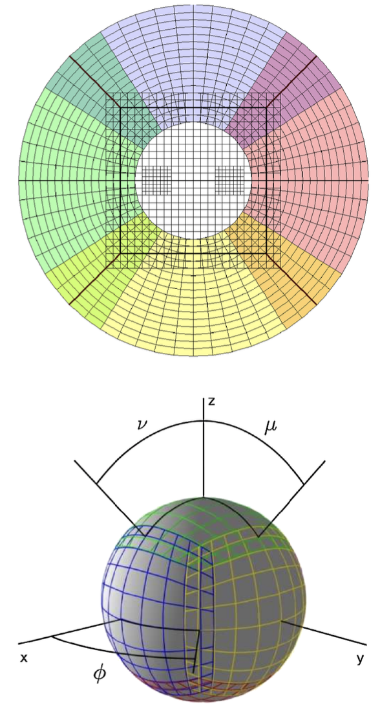

Llama¶
The binary black hole evolution was carried out on a 7-patch grid structure.

A Cartesian mesh-refined region which covers the near-zone, and six radially oriented patches covering the wave zone.
Coordinates¶
Parameter¶
Inner radius for the spherical grids.
>>> Coordinates::sphere_inner_radius = 1.8
Location of the physical outer boundary.
>>> Coordinates::sphere_outer_radius = 20.0
Coordinates::coordinate_system = “Thornburg04nc” Coordinates::h_radial = 0.1 Coordinates::n_angular = 20 Coordinates::outer_boundary_size = 1 Coordinates::patch_boundary_size = 2 Coordinates::additional_overlap_size = 2